LynnBuchanan.com
Mountain Rescue page
This page will present some accounts of mountain rescue missions, to offer an indication of their nature.
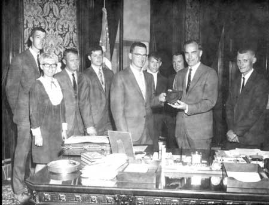
Washington State Governor Dan Evans, a climber, giving the Search and Rescue Life Saving Award to members of the Central Washington Mountain Rescue Unit, for actions on 23 December 1968.
Left to right, Jim Carlson, Judy Beehler, Lee Henkle, Dan Graff, Lynn Buchanan, Jack Powell, Dale Newman, Governor Evans, and Curt Julstrud. At the governor's office.
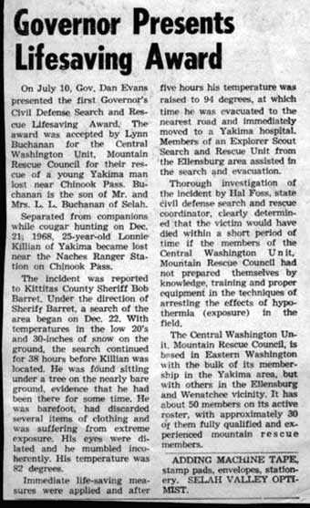
Story of the rescue, in the local Selah Valley Optimist, 31 July 1969.
Some History of Central Washington Mountain Rescue (CWMR)
When Central Washington Mountain Rescue was organized there was no Search and Rescue organization in central Washington. As related by Lex Maxwell (below), Lex, Lewis Newhall, Bob McCall, Lynn Buchanan and a few others got together several evenings at the individuals' homes in Yakima over a few months in the summer of 1953 and discussed how best to help those who got into trouble in the mountains. John Thompson Sr. was the Undersheriff who organized rescues for Sheriff Bert Guns in those days. As a mountain climber himself, he was interested in getting some people organized so competent mountain climbers could be called and depended upon to go to the field to provide rescue services for the Yakima County Sheriff's Office. There were several conversations with the folks in Seattle, then CWMR was started as one unit with three branches. Yakima was the main group, with a branch in Kittitas County and another in Wenatchee. CWMR officially became a Unit of Seattle Mountain Rescue Council. At that time Seattle had been organized since 1948. Lynn Buchanan joined them in 1952 following an accident on Lundin Peak. Lynn went on several missions with Seattle then brought some of that expertise to Yakima in the summer of 1953.
CWMR HISTORY, by Lex Maxwell (1910 - 2007), written in 1999.
The history of Mountain Rescue for the Yakima area seems so prosaic when reduced to dates, people and statistics. The real story lies in the courage, stamina, skill, dedication and comradeship of those who participated; and in the tragedies both happy and unhappy endings which were the occasions of rescue. A fascinating book could be written from this material.
The idea of a rescue unit came about at the urging of my old friend Ome Daiber, who with Wolf Bauer and others started the Mountain Rescue Council of Seattle. They often came into the East Cascades and wanted help from some of us local climbers. This was about 45 years ago. I was up to my neck in many other activities but managed to call together a number of climbing and skiing patrol friends to discuss the possibility of forming an organization.
Louis G. Newhall, an ardent National Ski Patrolman, agreed to accept the chairmanship of our embryo group. He was a very dedicated leader and would drive all night to attend rescue meetings in Seattle to bring us information and share experiences with their council.
Our early needs were manifold. We had to train our personnel in techniques of evacuation for injured people, in first aid training, in teamwork and how to cooperate with the civil authorities as well as other rescue units. We needed money to buy berg tragas, litters, ropes, first aid supplies, climbing equipment and radios. We raised the money, we trained our people; and it was long, hard and sometimes thankless. Yet along the way, a call for help would come and as everything cranked into gear, it gave a new stimulus to our efforts. Publicity in the media was helpful because it mentioned names of those involved.
We had an asset in personnel with Marcel Schuster who had been in the Berg Watch, which is a group of mountain guides in Germany who could be called in for rescue. Later, he served throughout WWII in the German mountain troops. Some of the training he was able to pass onto us in rescue techniques was invaluable.
In addition to Louis Newhall and myself, early presidents of our mountain rescue units were Bob McCall, Hal Foss, Gene Prater, and Lynn Buchanan.
One of the first things we did was to develop a procedure manual which each member kept near his telephone and which we also furnished to the Sheriffs' and Forest Service offices. Another big step was to get similar rescue units established in Ellensburg and Wenatchee. Dr. Don Fager of Wenatchee was a leader in that unit.
During the early years we developed some complex arrangements with Civil Defense, with the radio hams and with other organizations who could assist us. The radio "ham" groups were trained in communications, had the equipment and formed an excellent statewide setup on many rescues. Civil Defense had staff, equipment, and offered us disability protection in case of accident.
However, there was always the haunting fear of a lawsuit being thrown at us for the liability of a mistake or negligence. So at one of our meetings with the Rescue Council, I discussed this with Paul Williams, a Seattle lawyer, who at that time was chairman of the Seattle unit. He recommended that we affiliate with the Rescue Council and by becoming a branch of the Council would enjoy the corporate shelter it had. We agreed. Paul worked out the needed resolution and we became the Central Washington Unit of the Mountain Rescue Council.
Thereafter one of us would always be a member of their board of directors. After a few years, I grew tired of driving back and forth to Seattle, so Lynn Buchanan agreed to serve. Lynn later not only became chairman of the Rescue Association but went on to become chairman of the Mountain Rescue Association, a national organization of the Mountain Rescue units.
There is a lot more that should be recorded here; and the names of a lot of fine people whose work and dedication made the Central Washington Unit of the Mountain Rescue Council an important and necessary organization for the humanity it serves. I am proud to have had a part in it.
Some members during those times:
John Adams, Hal Foss, Barry Prather, Val Bedard, Jim Griffen, Joe Roemer, Merril Belton, Ed Link, Pat Sutphen, Jim Carlson, Chuck Lyons, Louie Ulrich, Jamie Christensen, Gene Prater, Lex Maxwell, Judy (Beehler) Hanna, Wally Juneau, Jim Bjorgen, Matt Kerns, Tom Bjorgen, Jim Linse, Dick Blair, Phil Lizee, Paul Bourden, Tom Lyons, Walt Braton, Richard Lukins, Lynn Buchanan, Dave Mahre, Terry Burger, Gerald Marsh, Bill Butts, Bob McCall, Harry Caperton, Jim Obert, Clint Crocker, Dr. George Roulston, Dave Davidson, Jerry Schlesinger, Al Drengson, Kathy Schneider, Roger Durmont, John Sebastian, Craig Eilers, Paul Smith, Allan Ewert, Bob Swenson, Norm Ferguson, Bob Sutphen, Gary Foulkes, Dr. Clark Thompson, Ron Gelderman, Dave Thompson, Dallas Hake, John Thompson Sr., Tom Hargis, John Thompson, Lee Henkle, Dr. Ralph Uber, Steve Hoit, Hank Weber, Gary Holscher, Dorothy Wood, Don Jones, Brian Zeutenhorst, Ellensburg Unit: Gene Prater, Bill Prater, Barry Prather, Fred Stanley, Fred Dunham
Mt. Rainier avalanche victims, 9 May 1979
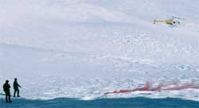
Late in the evening I received a phone call from Seattle Mountain Rescue Council (MRC) asking if I would assist on a mission to locate Willi Unsoeld and Jamie Diepenbrock who had been killed in an avalanche on Mt. Rainier during a storm the previous weekend. The weather was improving and anticipated to be clear for the search the next morning.
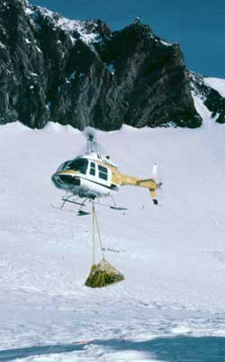
I drove from Yakima to Paradise visitors center, Mt. Rainier National Park, that night, slept a few hours in the car, and met MRC and TMRU (Tacoma Mountain Rescue Unit) in the morning. About 30 Mountain Rescue folks from Seattle and Tacoma, as well as myself, assembled at the visitors center in the Park. We were given a briefing by the Park Service on the procedure they planned. The weather at the mountain was clear with calm winds. Because it was a body search, the rescue team was not offered helicopter transport to the scene. We would be hiking up from the parking lot to the scene just below Cadaver Gap. A couple TMRU members did not want to make the hike to Camp Muir so they stayed at the base with the Park Service. Because the avalanche hazard above Camp Muir was unknown, each of us was issued a 1-kilo stick of explosive to carry on top of our pack. One member was issued a package of blasting caps. I got into the line at the end, figuring that they would be out of explosives before they ran out of willing pack horses. However, the Park Service had it figured out pretty well, one package for each person, with the coil of primacord for the last one, me!
Some one pointed out that the primacord was good for cutting down trees; just a few wraps would do it. I had a coil of many wraps lying against the back of my neck - on top of the pack.
As we got to Camp Muir, some Park Service folks arrived via a helicopter. Then the helicopter left and returned with a 75 mm recoilless rifle and some ammo slung beneath it. The gun was set up on the snow just north of the building. Camp Muir at that time was only a large stone climbers hut and a stone outhouse.
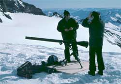
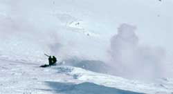
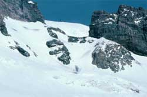
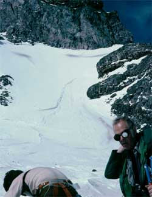
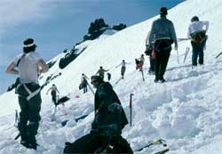
The recoilless rifle gunner laid a couple of sheets of plywood on the snow to keep the gun from settling in as it was fired. He then fired high explosive projectiles into possible avalanche slopes around the area and above where the avalanche had stopped. Two of the photos show the gun shooting, and the black smoke of an impact. The slide had come down from Cadaver Gap flowing first east then slightly north before stopping. The location of the bodies was probably somewhere near the avalanche terminus. All the slopes proved stable (the snow was frozen hard) so the gunner fired a few rounds into the big icicles hanging from the stone walls of Gibralter Rock overhanging the scene.
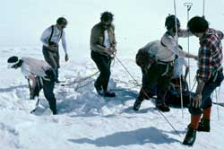
Since the snow proved to be stable we and the Park Rangers left Camp Muir. We climbed up and curved right towards Cadaver Gap. This took us across to the lower end of the avalanche, which had stopped about 500 feet higher than Muir. By the time we were crossing the center snowfield, the heat of the sun was starting to make the snow soft. About that time there was a large explosion back at Camp Muir, where a cloud of smoke noticeably boiled into the air. The senior ranger in the party got on the radio to ask what had happened. The ranger at Muir had decided not to carry the explosives back down, so had exploded half of it. With the snow in the direct sunlight getting softer by the minute, he was told rather explicitly to NOT detonate any more until we left the area.
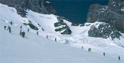
We continued up to the avalanche terminus. The senior ranger assigned duties to the different rangers. The one in charge of the probe line gave directions to the Mountain Rescue folks in metric measurements: "x" centimeters between our feet, "x" centimeters between persons on the line. Everyone was looking at each other with blank looks and amusement. Metric was not the way they had been trained. The senior ranger called me out of line, then asked the ranger in charge of the probe line to take charge of the shovel crews. He asked me to take charge of the probe line. I organized a coarse probe line using inches for measurements, and we started probing up the avalanche. We made only a few lines up the hill when we found Willi, then we followed his climbing rope to where we found Jamie. We dug the bodies out of the snow and placed them in body bags.We placed the bodies in rescue sleds and transported them down to Paradise where they were loaded into a hearse for the ride to Olympia. As we passed the pile of snowshoes we each picked up our pair, and at the Visitor's Center we checked out with the Park Service.
It was early evening and another mission was over, with a long drive ahead before we were all safely home.
Mt. Adams, northeast side: Some rescues within the photo area.
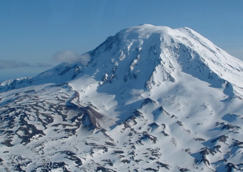
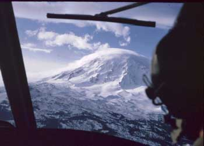
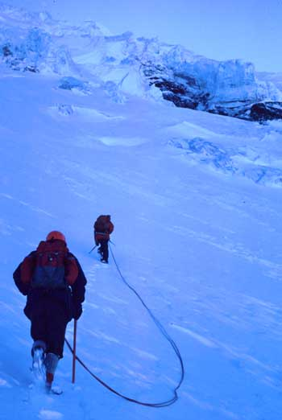
Wilson Ice Fall: Two climbers disappeared when climbing the Wilson Icefall area of Mt. Adams. A multi-day search involved snowmobiles, helicopters, and climbers on several possible routes, including the adjacent two Lyman glaciers. One body was found and recovered at 10,000 feet on the South Lyman Glacier. The body was lowered to a snow machine pick-up point, in the dark. The snow machine trip back to the cars was not without event, in the dark. On a steep irregular slope the sled with the body passed the snow machine. On the way past the snow machine, the victim's boot booted the passenger, mountain rescue member Judy Beehler, off the snow machine. The snow machine route extended to the southeast corner of the mountain, in the Yakima Indian Reservation. As with most such late night rescue completions, because rescues that are not planned ahead of time, the incentive to get home to go to work in the morning resulted in another long late drive home.
A couple days later the body of the second victim was found lower on the mountain, by the terminal moraine of the Lyman and Wilson Glaciers. It was recovered by an Army helicopter with Deputy Morrie Rice and myself onboard.
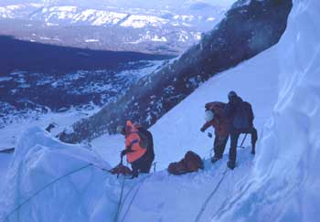
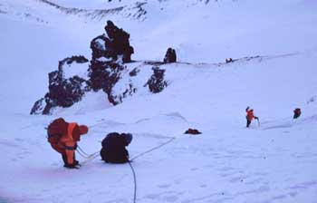
Photos:
Initial search with helicopter.
Clint Crocker and Judy Beehler climbing to location of the first body found.
Location of first body on ice serac. CWMR members preparing to lower the body. Strong wind conditions.
Lowering body down off the glacier. Body taken to the morraine at the top of the photo (long distance) where the snow machines could reach, for the trip out in the dark.
Northwest Ridge: A climber had slid down a steep slope, out of sight from his partner. His partner hiked three miles to the road, and called the Yakima Sheriff's Office. We dispatched a MAST Huey helicopter with two Central Washington Mountain Rescue (CWMR) members, myself and Judy Beehler. At the mountain we spotted the accident victim at a rock on the slope. We were able to get off the helicopter where it could hover at a nearby pinnacle. We roped-up and walked across a steep slope to the chap, laying on his stomach, clinging to a rock. He had slid down the slope over a thousand feet. He was not inclined to let go of the rock, but we were unable to take the rock with us. We roped him to us, assured him of his security, and walked him back across the slope to the pinnacle. The helicopter returned to hover close and pick us up, introducing the fall victim to a less secure feeling.
Adams Icefall: Two climbers on a Cascadian Mountaineering Club climb got on ice a bit above their capabilities, in the Adams Icefall. A team of CWMR personnel were sent to assist them out of their dilemma, and down the mountain.
Airplane crash: A Forest Service contract Cessna 240, used for smokejumping, crashed on the North Ridge. The pilot was killed. CWMR sent several teams to pick up the body and escort the FAA investigator to the scene. The mission involved two days and two trips in a Huey. One trip became particularly interesting when the Huey lost a fuel pump as he was landing us on a pinnacle at 10,400 feet. We rolled out of the door and lay on the flat top of the rock while the pilot slid the Huey forward with just enough power to clear the rock and drop down the mountain to pick up enough airspeed for level flight without overtaxing the fuel system.
Lyman Glacier: A solo climber died in a fall on the Lyman Glacier. A few rescue team members brought the body off the icefall, then slid it to a more level place where it could be picked up by a Chinook helicopter. However, after loading the body, the winch on the helicopter broke, before the rescue team members were on board.
The team members preferred to leave with the helicopter since they were not fully provisioned for a comfortable night on the mountain. They also had flown to the higher altitude from a lower altitude, without any time or physical effort in the interval, which can contribute to altitude sickness that makes a bivouac less desirable.
So the helicopter and climbers moved to a precarious position where the helicopter rotor blades were uncomfortably close to the rocks while the climbers got aboard. That consumed additional time, resulting in the low-fuel warning light illuminating before reaching the destination at the Yakima Firing Center (Army base), significantly before. The pilot assured us that he could auto rotate to a landing if we ran out of fuel. But then all aircraft can and do eventually land, one way or another.
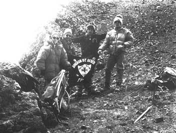
1974. Mexico. Photo of Judy Beehler, Lynn Buchanan and two members of the Brigada de Rescate/Socorro Allpino, the Mountain Rescue group of Mexico City. Just below the summit of Popocateptl (17,888 feet). Seattle Mountain Rescue Council was training members of the Socorro Alpino in some or our mountain rescue techniques.
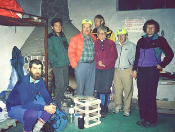
1995. Mexico. Photo of Jeff Main, Ruben (Socorro Alpino), Lynn Buchanan, Mike Chadwick, Betty Martinsen, Joe Roemer and Terry Sinclair. Photo by Connie Smithhisler (now Buchanan). Socorro Alpino headquarters room at the ITT (International Telephone and Telegraph) station in Paseo de Cortez.